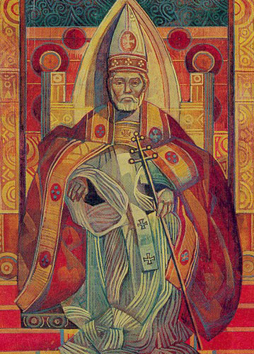
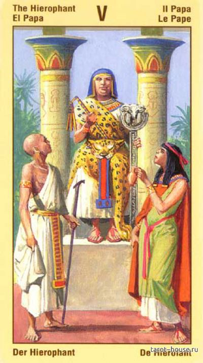
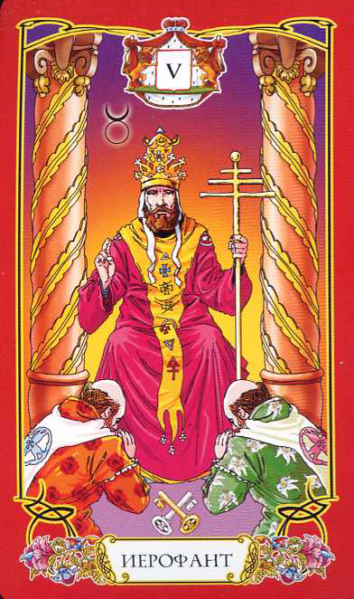
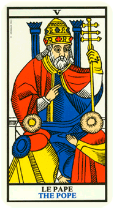
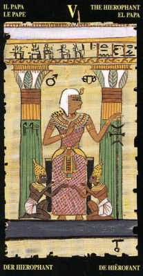

Жрец









таро тота тетраморф
детали на карте:
Мужчина на троне, часто между двумя колонами, что "передает привет " от 2СА
На мужчине тройная корна, тройной крест (Уэйт), делает жест благославления (как то это немного веет "во имя Отца, и Сына, и святого Духа..."), то есть опять троица.
В ногах два перерещенных ключа (ключи что открывают???) и два служителя церкви, что указывает, что мужчина на троне имеет самый высший сан - он обладает властью.
На некоторых картах жрец сидит с открытой книгой, что символизирует, что он источник знаний.
цвет: красный (энергия, выделение главного), желтый (теплота, солнечность), синий (отдаленность)
на карте Кроули: "желтый жрец на черном фоне - луч света в темном царстве" :)
в некоторых картах присутсвует немного бирюзового цвета (связь с Венерой)
фигура:
троичная корона, крест, книга
символ:
пентаграма (звезда)
буква:
М - тут уже как 5 точек
ощущения
Ощущение справедливости, морали и чистиоты, в этой карте проявляются ценности человека.
Также сильно веет темой обучения, здесь есть источник знаний, законов природы, мира, вселенной. Знания которые помогают постичь полноту вселенной. Он авторитет, он знает как надо.
И еще, все таки это еще карта некоторого официоза, церемоний, ритуальности.
ключевые слова: учение, обучение, ценности, мораль, этика, совесть, благоразумие, религиозность, ритуал, традиции
запах:
ладан, анис, сандал. Запах новой книги, запах свечи медовой церковной, запах библиотеки.
звук:
нараспев молитва (либо хор)
вкус:
вкус мяса с приправами, швепс без газа, гранатовые корки
астрология:
Солнце, Марс, Сатурн, Юпитер
мифология:
Архиттип Отца, Зевс, Вотан, родоначальник знатного рода
Фразы: "Что таколе хорошо и что такое плохо"
способности: защищать и отстаивать свои границы, добиваться
окружение: печать (штамп)
амулеты: мужской перстень на среднем пальце